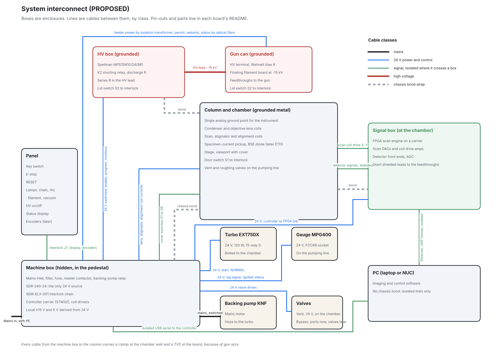
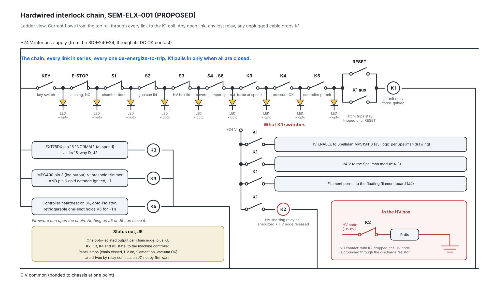

Electronics
How the electronics are split up, what talks to what, and the one circuit that is allowed to switch on the high voltage. Nothing on this page has been built yet.
This page is a snapshot of the current design, not a history. The design will change many times before a board is ordered. When it does, the diagrams here are replaced and the reasons rewritten. Last revised October 2026.
Three layers
Everything electronic in the instrument sits in one of three layers, chosen by how fast it has to react.
- The scan engine, an FPGA. An FPGA is a chip whose logic is wired up by the designer rather than fixed at the factory, so it does many things at once with exact timing. It steps the beam across the sample and samples the detector once per pixel, a million times a second, and streams the frame to the PC.
- The machine controller, a microcontroller. Everything slow: pumping down, reading the gauge, setting lens currents, lighting the status display. Ordinary firmware.
- The interlock chain, relays only. No firmware at all. It is the only thing that can permit the high voltage and the filament. The FPGA and the microcontroller can ask for high voltage off at any time, but neither can force it on.
The boxes and the cables

- Machine box, hidden in the pedestal. Mains comes in through a filter and a master contactor. One industrial 24 volt supply feeds everything: turbo, gauge, valves, relays and the high-voltage module. Every other rail is made locally on the board that needs it. The interlock chain and the machine controller live here.
- Panel. A key switch, an emergency stop, a reset button, four lamps and a status display. The lamps are driven by relay contacts, not by software, so they tell the truth even if the controller is dead.
- High-voltage box and gun can. Both grounded metal. The 15 kV supply, its series resistor and the shorting relay are in the box. The gun's terminal and its floating filament supply are in the can on top of the column. Each has a lid switch in the interlock chain, because the air side of the gun is the one place 15 kV exists outside the vacuum.
- Column and chamber. Grounded metal and the single analog ground point of the instrument. The lens coils, scan coils and detectors are here, so the signal box sits right beside it with short shielded leads to the feedthroughs.
- Signal box, at the chamber. The FPGA on a carrier board, the scan drivers and the detector front ends. Fast, small signals stay close to where they are made.
- PC. No ground connection to the instrument at all. The FPGA streams frames over Ethernet, which is isolated by the transformers in every Ethernet port. The controller talks over a USB serial link through an isolator. Two cables, both floating, so a gun arc cannot find a path through the computer.
Every cable from the machine box to the column carries a clamp at the chamber wall and a protection device at the board, because an arc in the gun throws a fast pulse into anything connected to it.
The interlock chain

- Everything is de-energize-to-trip. An open door, a dropped relay, an unplugged cable or a dead supply all look the same: the chain opens and high voltage goes off. There is no state in which a fault leaves the gun live.
- The links. A key switch. The emergency stop. A safety switch on the chamber door, the gun can lid, the high-voltage box lid and any further cover. A relay that only closes when the turbo reports it is at full speed. A relay that only closes when the gauge reads below the threshold and its cold cathode has actually lit, so an unlit gauge can never pass as vacuum. And a relay held in by the controller.
- The controller's permit is a heartbeat, not a level. The controller must toggle a line a few times a second. A one-shot keeps the relay in only while the toggling continues, so a crashed controller, a stuck pin or a pulled cable drops the high voltage within about a second. Nothing the controller can do closes any other link.
- It latches. After any trip the chain stays open until someone presses reset with every link closed. A door that closes again does not bring the gun back by itself.
- What the permit relay switches. The enable line and the 24 volt feed to the high-voltage module, so the module is unpowered when the chain is open regardless of the enable pin. The permit to the filament supply. And the coil of a shorting relay in the high-voltage box, whose normally closed contact grounds the high-voltage node through a discharge resistor whenever the chain is open or the relay loses power.
- Status can only go out. The controller gets an opto-isolated copy of every node for logging and the display, and the panel lamps are relay contacts. Neither path can close the chain.
The permit relay is a force-guided safety relay, the kind whose contacts are mechanically linked so that a welded contact shows up on the auxiliary contact instead of silently holding the gun live. The acceptance test for this board is simple: every input, opened in turn, must take the measured high voltage below 50 volts within one second.
The boards
Six designs, about ten boards once the replicated ones are counted. One board outline and one connector family for all of them. The FPGA and microcontroller are bought modules on custom carriers rather than laid out from scratch.
| Board | What it does |
|---|---|
| Interlock chain | The relay logic above. No firmware. The first board to be drawn. |
| Controller carrier | The microcontroller, its power, and the connectors to the gauge, turbo, valves and panel. |
| Scan and acquisition | Digital-to-analog converters for the scan coils, the detector analog-to-digital converter, and the FPGA carrier. |
| Coil driver, replicated | A precision current source. One per lens, stigmator and alignment coil, because a lens current that wanders by a part in ten thousand moves the focus. |
| Floating filament supply | Heats the filament while sitting at 15 kV below ground. See below. |
| Detector front end, replicated | A low-noise amplifier for the specimen current and the backscatter diode, later the photomultiplier electronics. |
Decisions, and the reasons behind them
- One 24 volt rail, everything else local. One supply to buy, one thing to fuse, and every board makes its own clean analog rails from it where they are used. There is no 12 volt rail because nothing needs one.
- Heating the filament across 15 kV with a transformer and light. The filament sits at the gun voltage, so its power has to cross a 15 kV barrier. The plan is a hand-wound transformer on a grounded ferrite ring: a 24 volt primary driven at high frequency, and a secondary of a few loose turns of 30 kV silicone wire whose insulation is the whole barrier. On the floating side a rectifier, a current regulator and a small microcontroller. The permit and setpoint come in over one plastic optical fibre and status goes back over another. No light, no filament. An earlier idea, a battery floating at gun voltage, was dropped: nothing to charge, nothing to run flat.
- Ethernet for the pictures, isolated serial for the controller. A frame is a megabyte and comes once a second, so Ethernet is the natural fit, and its port transformers give isolation for free. The controller has little to say and gets a slower link through a USB isolator. Both leave the PC ungrounded to the instrument.
- Relays for safety, not firmware. Firmware can have bugs, hang, or be mid-update. A relay chain fails only one way, open, and can be tested with a switch and a meter.
- Panel lamps from relay contacts. The lamp that says the chain is closed is wired to the chain. It cannot disagree with reality.
- Bought modules on custom carriers. Laying out a modern FPGA with its memory and power is a project in itself. A commercial module does that; the carrier only has to route its pins to the instrument's connectors.